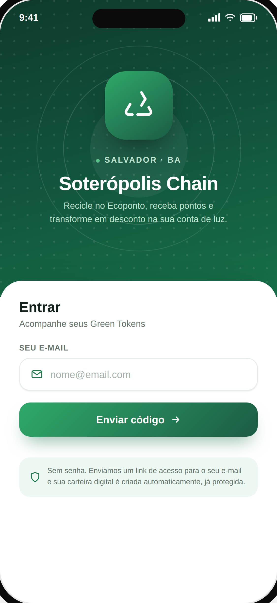
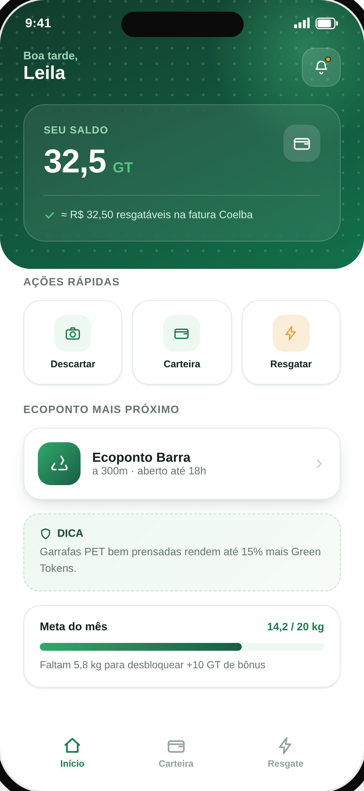
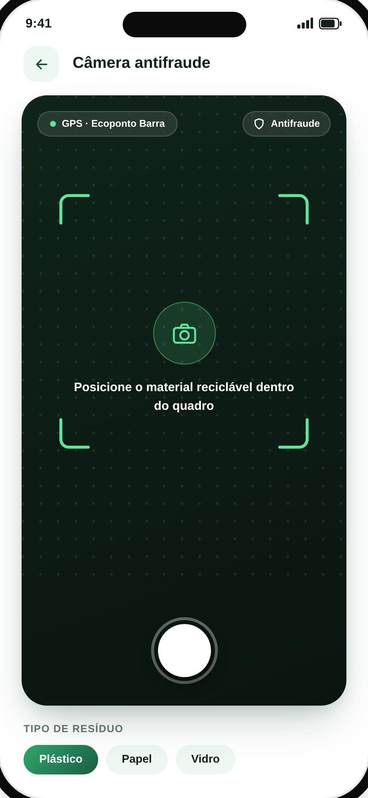
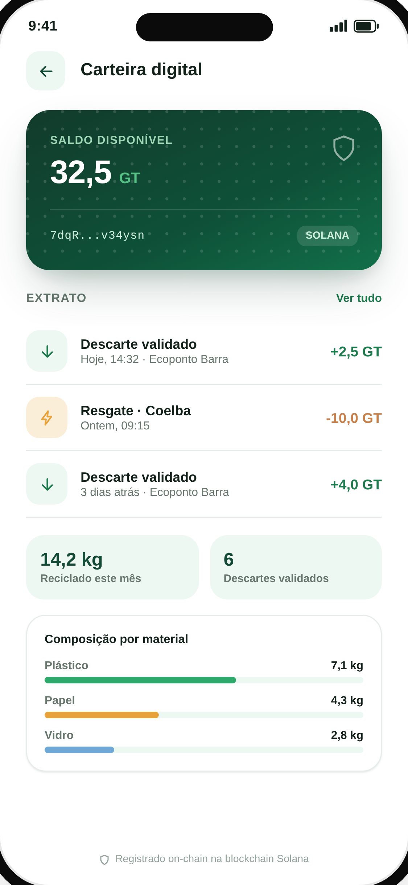
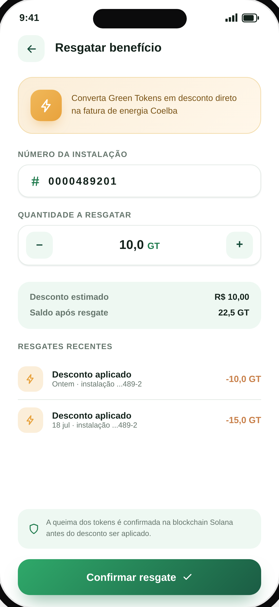

PARADA 01 · ENTRADA
Login por e-mail, sem senha
Um link de acesso é enviado por e-mail. No primeiro login, uma carteira digital em blockchain é criada automaticamente — o cidadão nunca vê nem manipula chaves criptográficas.
Cada descarte reciclável validado no Ecoponto vira Green Token — e Green Token vira desconto real na sua conta de luz. Sem o cidadão precisar entender nada de blockchain.

Moradores de Salvador que se dispõem a reciclar não recebem nenhum retorno tangível, e não existe comprovação confiável de que o descarte realmente aconteceu.
O material é entregue no Ecoponto, mas o cidadão não recebe nada em troca do esforço.
Não existe comprovação de que o descarte realmente aconteceu — espaço aberto para fraude.
Controle manual ou autodeclaração não funcionam numa cidade do porte de Salvador.
Cada etapa é validada — pelo backend, pela blockchain, ou pelas duas — antes de gerar valor real para o cidadão.
Um link de acesso é enviado por e-mail. No primeiro login, uma carteira digital em blockchain é criada automaticamente — o cidadão nunca vê nem manipula chaves criptográficas.
No Ecoponto, o cidadão fotografa o material reciclável — captura ao vivo apenas, sem upload de galeria. A localização é anexada automaticamente.
O backend calcula a distância exata até o Ecoponto (fórmula de Haversine) e rejeita instantaneamente qualquer tentativa fora do raio — mantendo o registro para auditoria antifraude.
Descartes validados emitem Green Tokens (GT) via smart contract, de forma idempotente — sem risco de duplicação em caso de falha de rede.
O cidadão resgata os GT acumulados como desconto na fatura de energia — integração simulada com a Coelba nesta fase de MVP.
Não são mockups aspiracionais — são as 5 telas do MVP funcional, testado em dispositivo Android físico.




Cada camada testada de forma independente, e depois validada em conjunto contra ambiente real.
Cada fase foi validada contra ambiente real antes de avançar para a próxima.